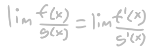

Every non-constant polynomial with complex coefficients has at least
one complex root
The distribution of a sample variable approximates a normal
distribution as the sample size becomes larger, assuming that all
samples are identical in size
Every integer greater than 1 either is prime itself or is the
product of a unique combination of prime numbers
The sum of the reciprocals of the squares of the first n positive
integers is equal to pi squared divided by 6
If n objects are put into m containers, with n > m, then at least
one container must contain more than one object
If G is a finite group and p is a prime number dividing the order of
G, then G contains an element of order p
If p is a prime number, then for any integer a, the number a raised
to the (p-1)th power is congruent to 1 modulo p
Every simply connected, closed three-dimensional manifold is
homeomorphic to a three-dimensional sphere
Every bounded sequence in ℝ has a convergent subsequence.
DES 157B - Interactive Media III - Spring 2023